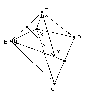
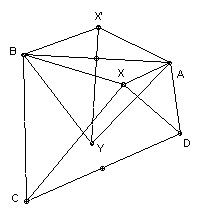

ABCD is a convex quadrilateral. The perpendicular bisectors of AB and CD meet at Y. X is a point inside ABCD such that ∠ADX = ∠BCX < 90o and ∠DAX = ∠CBX < 90o. Show that ∠AYB = 2 ∠ADX.

Solution
Take X' and Y' on the perpendicular bisector of AB so that BX'Y' is similar to BXC (and Y is on the same side of AB as C). Then the triangle BXC can be obtained from BX'Y' by rotating and dilating about B. Hence XX'/BX' = CY'/BY' (obvious, but use similar triangles if you are doubtful). Similarly, AXD is obtained from AX'Y' by rotating and dilating about A. Hence XX'/AX' =Y'D/AY'. But BY' = AY', so CY' = Y'D. Hence Y' = Y. So ∠AYB = 2 ∠AYX = 2 ∠ADX.

Comment
The official solution is appalling. It runs to about 2-3 times the normal length and involves a formidably complicated construction. In general, the official solutions to the shortlist problems are not particularly good, unlike the official solutions to the actual IMO questions. The reason is that the solutions for the IMO questions are updated to reflect good solutions by competitors and others. But the shortlist solution is often no more than the proposer's solution. It is made worse by the fact that the Problem Selection Committee is provided with the proposers' solutions, so often make no independent effort to solve the problems.

© John Scholes
jscholes@kalva.demon.co.uk
10 Oct 2002